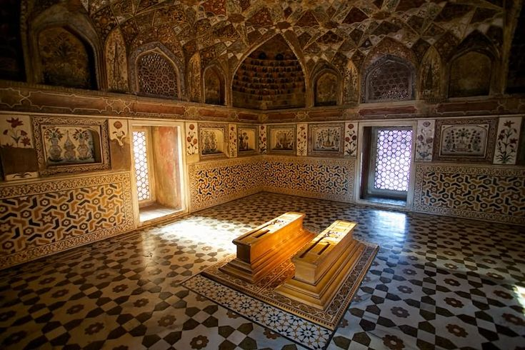

The Taj Mahal is an Islamic ivory-white marble mausoleum located in the Indian city of Agra on the Yamuna River's right bank. It was built in 1631 at the request of Mughal emperor Shah Jahan (reigned 1628–1658), who wanted to house the burial of Mumtaz Mahal, his favourite wife. It also contains Shah Jahan's own tomb. The mausoleum is the centrepiece of a complex that spans 17 hectares (42 acres) and contains a mosque and a guest house. It is surrounded on three sides by a crenellated wall and situated in formal grounds. The tomb was essentially built from scratch, completed in 1643, while other stages of the project required another 10 years of effort.In the Taj Mahal complex, there may be the entire project had been finished in 1653 at a cost estimated at the time to be over 32 million, which in 2020 would be roughly 70 billion (about $1 billion) in yen. A board of architects oversaw the 20,000 craftspeople working on the construction project. directed by Ustad Ahmad Lahauri, the emperor's court architect. The Taj has made use of a variety of iconography to depict nature divinity and beauty. In 1983, UNESCO named the Taj Mahal a World Heritage Site in recognition of its "the finest example of Muslim art in India among the enduringly valued works of art in the global collection ". Many consider it to be the finest example of Mughal architecture.
Architecture
The Taj Mahal builds on the design traditions of earlier Mughal and Indo-Islamic architecture. Successful Timurid and Mughal structures, such as the Gur-e Amir (the tomb of Timur, the founder of the Mughal dynasty, in Samarkand), Humayun's Tomb, which served as the model for the site's Charbagh Gardens and hasht-behesht (architecture) plan, Itmad-Ud-Tomb Daulah's (also known as the Baby Taj), and Shah Jahan's own construction, Delhi's Jama Masjid. Earlier Mughal structures were mostly made of red sandstone, but Shah Jahan encouraged the use of white marble inlaid with red. gems that are semi-precious. Buildings he financed became more opulent than ever.
Tomb
The tomb serves as the focal point of the entire Taj Mahal complex. It is a sizable, white marble building with an iwan (an arch-shaped doorway) and a big dome and finial on top that stands on a square foundation. The fundamental components of this Mughal monument are of Indo-Islamic origin.The basic structure is a sizable multi-chambered cube with chamfered corners that forms an irregular eight-sided structure with four long sides that are roughly 55 metres (180 feet) long each. Two similarly shaped arched balconies are stacked on either side of a massive pishtaq or vaulted archway that frames either side of the iwan.. The chamfered corner portions also include this motif of stacked pishtaqs, making the design symmetrical on all four sides of the structure. The mausoleum is surrounded by four minarets, one at each corner of the plinth that faces the chamfered corners. False sarcophagi of Mumtaz Mahal and Shah Jahan are kept in the main chamber; the true graves are down below.

Garden
The compound is built around a sizable charbagh, or Mughal garden, that is 300 metres (980 feet) square. Each of the garden's four halves is divided into 16 sunken parterres or flowerbeds by raised paths. A high marble water tank with a reflecting pool situated on a north-south axis to reflect the image of the mausoleum is located in the middle of the garden halfway between the tomb and the doorway. Al Hawd al-Kawthar, a reference to the "Tank of Abundance" \ given to Muhammad, is the name of the high marble water tank. The garden is designed with fountains and avenues of trees that are labelled with their common and scientific names.Babur, the first Mughal emperor, brought the charbagh garden, a style influenced by Persian gardens, to India. It reflects the Paradise garden, which is derived from the Persian paridaeza, which means "walled garden," and symbolises the four flowing rivers of Jannah (Paradise). Paradise is depicted as a perfect landscape of plenty with four rivers flowing from a central spring or mountain, dividing the garden into the north, west, south, and east in mystic Islamic scriptures from the Mughal era.